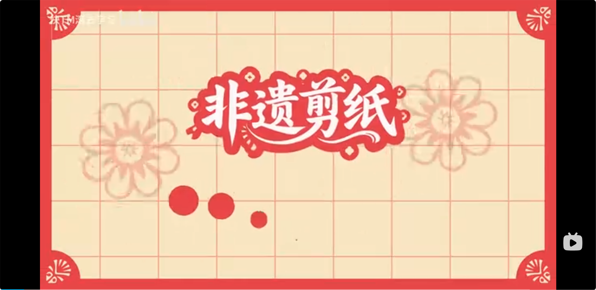
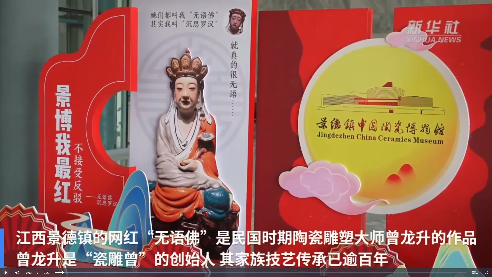

用镜头记录非遗之美，让传统文化生动起来
成都戏曲慕课：分步骤拆解京剧毽子功基础练习，详解侧手翻、毽子并腿、倒立灌腿等动作诀窍与完整训练方法，助力掌握核心技巧。
传承自明代的北方民间艺术瑰宝，视频快速呈现从设计到成品的全流程——以白描定形、精密切刻、手工染色为核心，串联20余种精细工序，直观展现“刻剪结合、色彩绚丽”的非遗匠心。
以第一视角沉浸式呈现景德镇陶艺核心流程，从揉泥排气、转盘拉坯塑形到精细修坯打磨，完整展现传统技艺的手部巧思与器物成型的匠心过程，视觉体验极具感染力。

本片记录了国家级非遗传承人王师傅的日常生活与创作，展现了他对剪纸艺术的热爱与执着。

讲述了一个陶艺世家三代人传承技艺的故事，见证了传统工艺在现代社会的创新与发展。
探访京剧传承基地，记录老艺人授艺、青年演员练功的日常，展现国粹艺术在新时代的传承与焕新。